Best Fit
Who should use vessels and when it belongs in the fleet journey.
Fleet / 01
Fleet opens as a clear maritime decision hub: what Port offers, who it helps, why it matters, and which route to take first.
The first screen combines positioning, proof, primary action, and fast internal navigation, so people can act immediately or compare the rest of the fleet route with context.
Shipping route hero
Select the closest route and Port keeps the next step, proof, and follow-up expectation aligned with cargo reliability and reach.
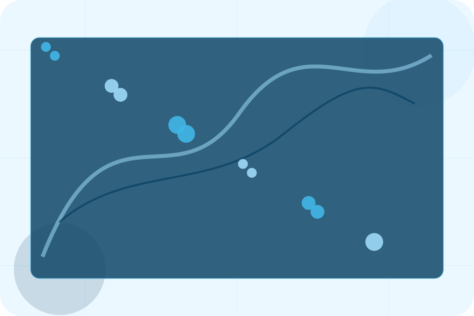
Fleet / 02
Vessels explains the practical scope, best-fit situations, and expected outcome so maritime visitors can compare options without decoding jargon.
The section keeps the offer concrete: what is included, who it is best for, what decision it supports, and which linked route gives the deeper detail.
Explore Fleet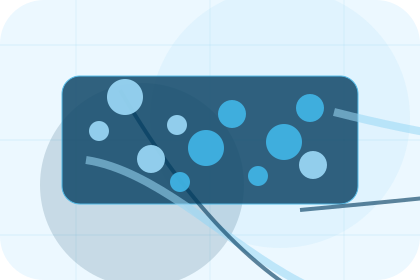
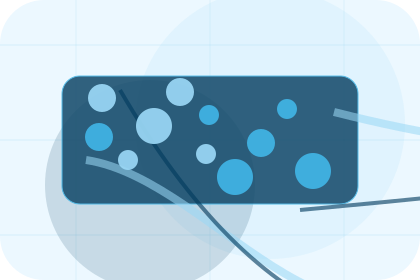
Who should use vessels and when it belongs in the fleet journey.
Fleet / 03
Capacity explains the practical scope, best-fit situations, and expected outcome so maritime visitors can compare options without decoding jargon.
The section keeps the offer concrete: what is included, who it is best for, what decision it supports, and which linked route gives the deeper detail.
Explore FleetWho should use capacity and when it belongs in the fleet journey.
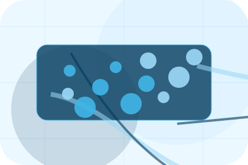
The practical benefit visitors should expect after choosing this route.
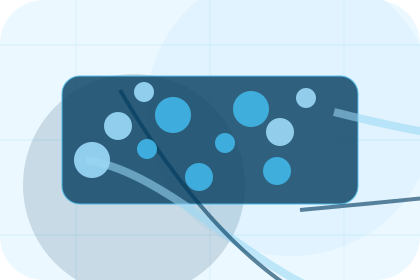
Where to compare details, pricing, support, or contact options before committing.
Fleet / 04
Routes explains the practical scope, best-fit situations, and expected outcome so maritime visitors can compare options without decoding jargon.
The section keeps the offer concrete: what is included, who it is best for, what decision it supports, and which linked route gives the deeper detail.
Explore FleetWho should use routes and when it belongs in the fleet journey.
The practical benefit visitors should expect after choosing this route.
Where to compare details, pricing, support, or contact options before committing.
Fleet / 05
Specs explains the practical scope, best-fit situations, and expected outcome so maritime visitors can compare options without decoding jargon.
The section keeps the offer concrete: what is included, who it is best for, what decision it supports, and which linked route gives the deeper detail.
Explore FleetWho should use specs and when it belongs in the fleet journey.
The practical benefit visitors should expect after choosing this route.
Where to compare details, pricing, support, or contact options before committing.
Fleet / 06
Equipment explains the practical scope, best-fit situations, and expected outcome so maritime visitors can compare options without decoding jargon.
The section keeps the offer concrete: what is included, who it is best for, what decision it supports, and which linked route gives the deeper detail.
Explore FleetWho should use equipment and when it belongs in the fleet journey.
The practical benefit visitors should expect after choosing this route.
Where to compare details, pricing, support, or contact options before committing.
Fleet / 07
Availability explains the practical scope, best-fit situations, and expected outcome so maritime visitors can compare options without decoding jargon.
The section keeps the offer concrete: what is included, who it is best for, what decision it supports, and which linked route gives the deeper detail.
Explore Fleet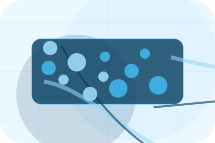
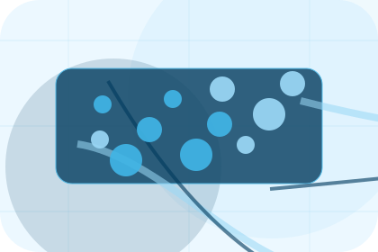
Who should use availability and when it belongs in the fleet journey.
Fleet / 08
Maintenance explains the practical scope, best-fit situations, and expected outcome so maritime visitors can compare options without decoding jargon.
The section keeps the offer concrete: what is included, who it is best for, what decision it supports, and which linked route gives the deeper detail.
Explore FleetWho should use maintenance and when it belongs in the fleet journey.
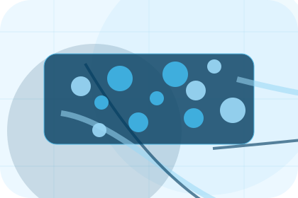
The practical benefit visitors should expect after choosing this route.
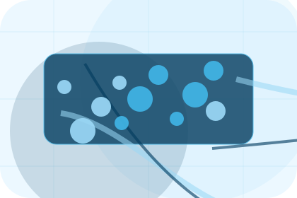
Where to compare details, pricing, support, or contact options before committing.
Fleet / 09
Gallery explains the practical scope, best-fit situations, and expected outcome so maritime visitors can compare options without decoding jargon.
The section keeps the offer concrete: what is included, who it is best for, what decision it supports, and which linked route gives the deeper detail.
Explore FleetWho should use gallery and when it belongs in the fleet journey.
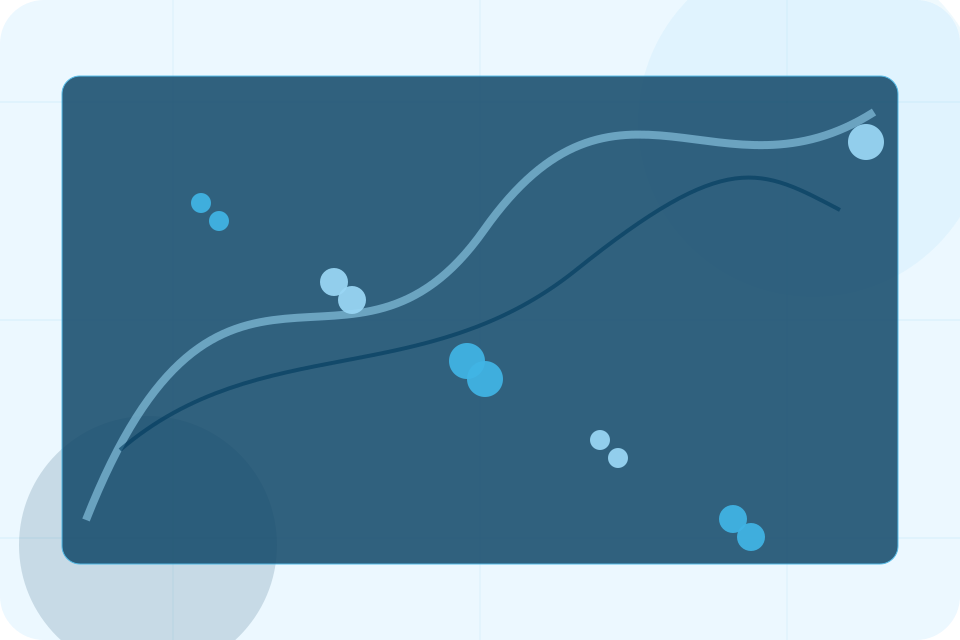
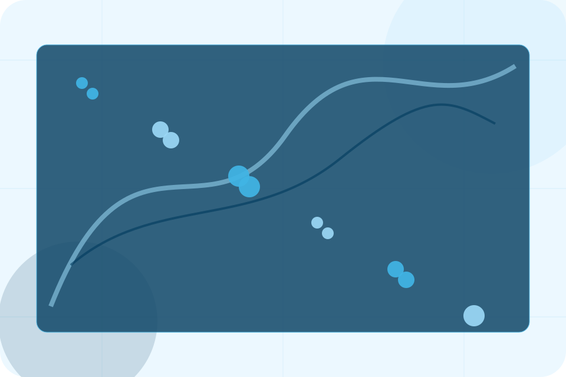
Shipping route hero
Select the closest route and Port keeps the next step, proof, and follow-up expectation aligned with cargo reliability and reach.
Fleet / 10
Port closes the fleet route with a clear action, a quick reminder of the value, and a low-friction way to request shipping.
Visitors who are ready can use the primary action. Visitors who are still comparing can scan the section links, proof, and support routes before they request shipping.
Request ShippingThe final block keeps the choice simple: act now, compare one more proof route, or send enough detail for a focused response.
Request Shippingcargo reliability and reach
A shipping site with ocean-blue service panels, cargo quote logic, port schedules, and tracking proof. Fleet ends with a direct path to request shipping, plus enough context for visitors who still need to compare.
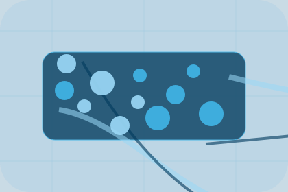
Request ShippingInformation is provided for planning and should be reviewed for the final client, location, and operating rules.